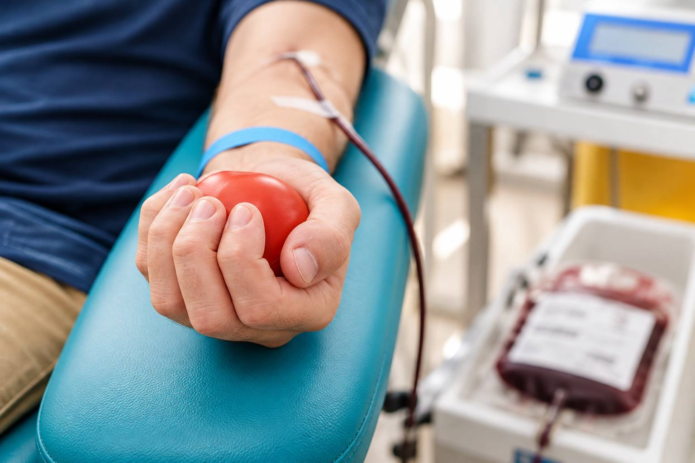
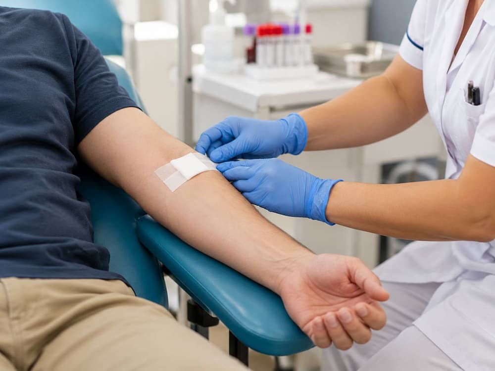

Tu sangre puede darle a alguien otra oportunidad
Donar sangre es sencillo, seguro y toma solo una mañana. En DonaVida te explicamos con palabras claras qué necesitas, cómo prepararte y qué esperar el día de tu donación.


¿Por qué es importante donar?
La sangre no se puede fabricar: solo existe gracias a personas que deciden compartirla. Cada día, hospitales de todo el país la necesitan para atender emergencias, cirugías y tratamientos de larga duración.
- Ayuda a personas que sufrieron accidentes o perdieron mucha sangre en una cirugía.
- Apoya a pacientes con cáncer, anemia u otras enfermedades que requieren transfusiones.
- Hace posible que mamás y bebés reciban atención cuando hay complicaciones en el parto.
- Tu cuerpo repone el volumen donado en poco tiempo y, si cumples los requisitos, puedes volver a donar.
Datos rápidos
Lo esencial que conviene saber antes de ir a un banco de sangre.
-
~3 horas
Duración del proceso
Contando registro, revisión médica, donación y recuperación. Ve sin prisas.
-
450 mL
Sangre que se extrae
Es una cantidad segura para una persona adulta sana que cumple los requisitos.
-
6 horas
Ayuno mínimo
La noche anterior cena algo ligero y sin grasa. Puedes tomar agua.
-
8 semanas
Entre cada donación
Es el tiempo mínimo que debe pasar entre una donación de sangre total y la siguiente.